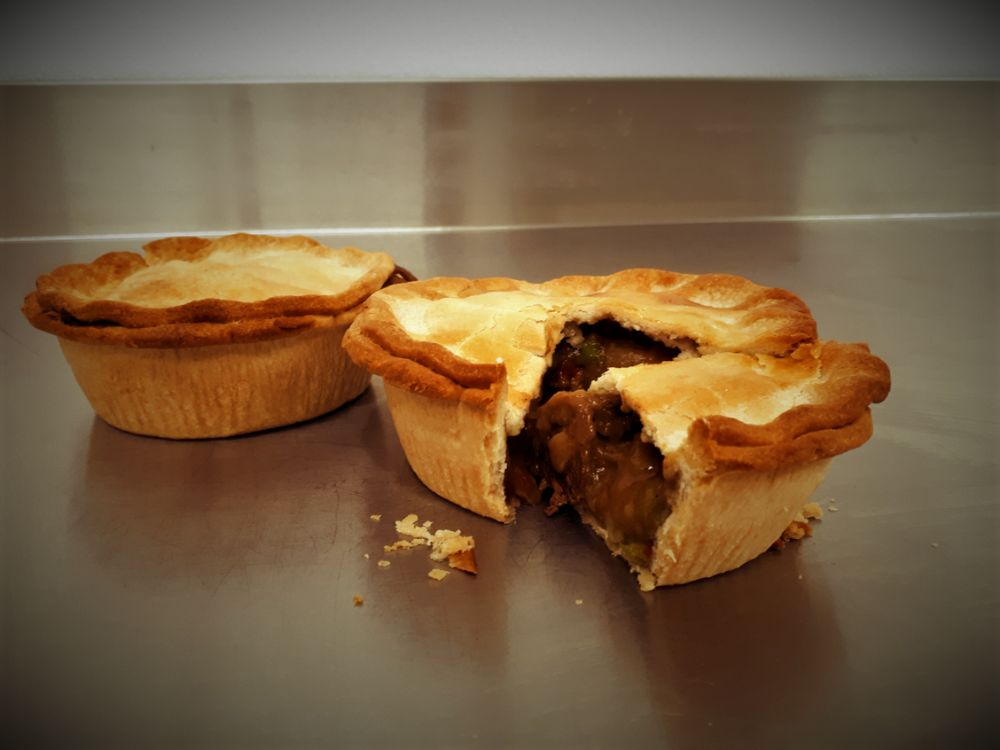

Savoury Pies
Traditional double crust. Want a top crust only? Call ahead and we’ll make it for you. Custom sizes are available.
- 5″ pie$9.00
- 9″ pie$24.50
- Beef Pot PieBeef, carrots, potatoes, onion
- Chicken Pot PieChicken, carrots, peas, potatoes, onion
- Chicken, Leek & MushroomChicken, leek, mushroom, cream, butter
- Curried ChickenChicken, apple, celery, onion, garlic, cream, butter
- Pulled PorkPork, onion, garlic, house-made BBQ sauce
- Shepherd’s PieGround beef, carrot, onion, mashed potato
- Steak & GuinnessBeef, carrot, potato, onion, Guinness
- Steak & KidneyBeef, beef kidney, onion
- Steak & MushroomBeef, mushroom, onion
- Steak & StiltonBeef, mushroom, onion, garlic, Guinness, blue cheese
- TourtièreGround pork, celery, onion, garlic. A family recipe.
- Turkey Pot PieTurkey, carrot, celery, mushroom, onion, green bean
Baking instructions
- Place the frozen pie on a heavy baking tray. Don’t thaw it first.
- Egg-wash the top if you’d like a glazed crust.
- Bake at 400°F: small pies 35–45 minutes, large pies 45–55 minutes, until golden brown and bubbly.
- Let it rest 10–15 minutes to set up. Enjoy!